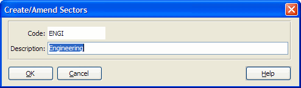

| Field Name | Data Type | Description |
| Business sector code | ||
| Description | ||
| Derived: Last Modified Date | ||
| Derived: Last Modified Time (seconds past midnight) | ||
| Derived: Last Modified User Id | ||
| Reserved for future use | ||
| Reserved for future use | ||
| Reserved for future use | ||
| Reserved for future use | ||
| Reserved for future use | ||
| Reserved for future use | ||
| Reserved for future use | ||
| Reserved for future use | ||
| Reserved for future use | ||
| Reserved for future use | ||
| Reserved for future use | ||
| Reserved for future use | ||
| Reserved for future use | ||
| Reserved for future use | ||
| Reserved for future use | ||
| Reserved for future use | ||
| Reserved for future use | ||
| Reserved for future use | ||
| Reserved for future use | ||
| Reserved for future use | ||
| Reserved for future use | ||
| Reserved for future use | ||
| Reserved for future use | ||
| Reserved for future use |
| Index Name | Is Primary? | Is Unique? | Word Indexed? | Database Fields |
| AUDIT | MOD-DATE + MOD-TIME | |||
| SEC-CODE | SEC-CODE | |||
| SEC-DESCRIPTION-INX | SEC-DESCRIPTION | |||
| SPARE-CHAR01 | SPARE-CHAR01 | |||
| SPARE-CHAR02 | SPARE-CHAR02 | |||
| SPARE-DATE01 | SPARE-DATE01 | |||
| SPARE-DATE02 | SPARE-DATE02 | |||
| SPARE-INT01 | SPARE-INT01 | |||
| SPARE-INT02 | SPARE-INT02 |
This table corresponds to the sector code and description data input via the Create/Amend Sectors Maintenance program, which can be accessed either directly from your Maintenance menu or instead indirectly if you choose to create a new sector "on the fly" while adding or amending a Contact or Organisation record.
For example to produce totals of unpaid bills over a selected threshold due from non-corporate clients working in the "Distribution" sector:
1 Link the following tables with the fields suggested:
SECTORS.SEC-CODE -> CONTACTS.CON-SECTOR
CONTACTS.REFERENCE-CHAR -> CONTRELATION.CON-REFERENCE
CONTRELATION.REL-RECORD -> CLIDB.CL-CODE
CLIDB.CL-CODE -> MATAC.CL-CODE
2 Write a record selection formula which includes e.g.:
SECTORS.DESCRIPTION = "Distribution" and
CONTRELATION.ROL-CODE = "C*" and
MATAC.UPB > {?Threshold}
3 Group the report by Client Name/ Code and place the sum of MATAC.UPB in the client headers or footers